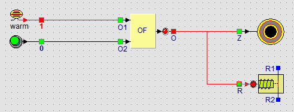

Learning path › Lesson 7 of 17

Start the simulation. Click the heat sensor (warm/cold) and press the panic button. Watch the relay: the LED turns green and the contact switches over.
Add a light sensor as a burglar detector: the alarm must also go off when a light comes on in the warehouse at night. The OR gate has only two inputs.
Put a second OR gate between the first OR gate and the outputs. The first OR gate combines heat and panic button, the second adds the light sensor. Buzzer and relay are connected to the output of the second gate.